East Africa is a region that begins in Tanzania in the south and extends north through the great grasslands and scrub forest of the savannas of Kenya and Uganda and then across the highlands of Ethiopia, including the Great Rift Valley. The region also comprises the countries of Somalia, Djibouti, and Eritrea, which are located in the African Transition Zone between North Africa and Subsahran Africa. Rwanda and Burundi are physically in East Africa but are covered in the lesson about Central Africa because of their border activities with the Congo. The world’s second-largest lake by surface area is Lake Victoria, which borders Uganda, Tanzania, and Kenya. (Lake Superior, on the border between the United States and Canada, is considered the lake with the largest surface area.) Lake Victoria provides fish and fresh water for millions of people in the surrounding region. The White Nile starts at Lake Victoria and flows north to the city of Khartoum in Sudan, where it converges with the Blue Nile to become the Nile River. The source of the Blue Nile is Lake Tana in the highlands of Ethiopia.
Figure 7.38 East Africa
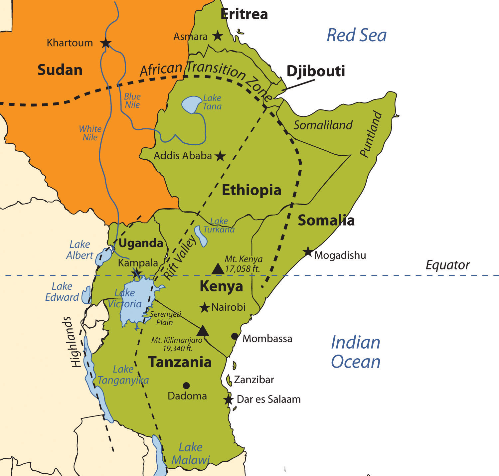Source: Updated from map courtesy of University of Texas Libraries, http://www.lib.utexas.edu/maps/africa/txu-oclc-238859671-africa_pol_2008.jpg.
The highest mountain in Africa, Mt. Kilimanjaro (19,340 feet), is located in Tanzania near the border with Kenya. The second highest peak, Mt. Kenya (17,058 feet), located just north of the country’s capital of Nairobi, near the equator, is the source of Kenya’s name. Both mountains are inactive volcanoes and have permanent snow at their peaks. They provide fresh water, which flows down their mountainsides, to the surrounding areas. Mountain ranges in the Western Highlands of the Congo have a greater effect on climate than these two massive peaks. For example, the Rwenzori Mountains on the Congo–Uganda border have permanent snow and glaciers and reach elevations of more than sixteen thousand feet. These ranges create a rain shadow effect that cuts off moisture for the region from the westerly equatorial winds.
Figure 7.39 Great Rift Valley of East Africa
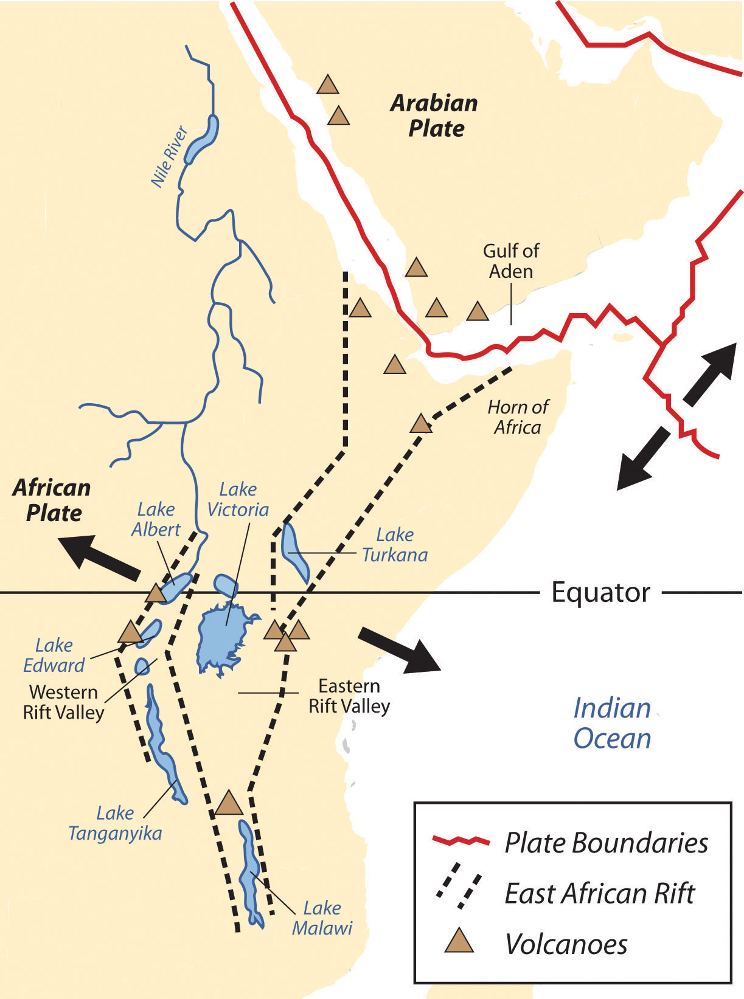The African portion of the rift extends from Mozambique to the Red Sea. The valley is created by the movement of tectonic plates.
Source: USGS, http://pubs.usgs.gov/gip/dynamic/East_Africa.html.
This same effect is created by the highlands of Ethiopia, which reach as high as fifteen thousand feet in elevation and restrict precipitation in areas to the east. The lower level of rainfall transforms much of the region from a tropical rain forest into a savanna-type landscape with few forests, more open grasslands, and sporadic trees. Dry desert-like conditions can be found in a number of places along the Great Rift Valley.
The Great Rift Valley provides evidence of a split in the African Plate, dividing it into two smaller tectonic plates: the Somalian Plate and the Nubian Plate. The Great Rift Valley in East Africa is divided into the Western Rift and the Eastern Rift. The Western Rift runs along the border with the Congo. A series of deepwater lakes run along its valley. On the western edge of the Western Rift are the highlands, which have a series of high-elevation mountain ranges, including the Rwenzori Mountains, the highest in the series. The Virunga Mountains on the Congo–Uganda border are home to endangered mountain gorillas. The Western Rift includes a series of deepwater lakes, such as Lake Tanganyika, Lake Edward, and Lake Albert. Lake Victoria is located between the Western Rift and the Eastern Rift.
The Eastern Rift does not have deepwater lakes; rather, it is a wide valley or basin with shallow lakes that do not have outlets. The lakes have higher levels of sodium carbonate and mineral buildup because of a high rate of evaporation. The differences in water composition of the lakes along the Eastern Rift vary from freshwater to extremely alkaline. Alkaline water creates an ideal breeding ground for algae and other species of fish, such as tilapia, which thrive in this environment. Millions of birds feed off the abundant supply of algae and fish. Birds attract other wildlife, which in turn creates a unique set of environmental ecosystems. The eastern edge of the Eastern Rift is home to the inactive volcanic peaks of Mt. Kilimanjaro and Mt. Kenya. A number of other volcanic peaks are present in the Eastern Rift, such as Ol Doinyo Lengai, an active volcano.
The erosion patterns of the highlands have caused a buildup of sediments on the rift valley floor, creating a favorable environment for the preservation of biological remains, including both human and animal remains. Important fossils and bones of several hominid species have been found in the Great Rift Valley. One of the most famous finds came in 1974 when the nearly complete skeleton of an australopithecine nicknamed “Lucy.” Lucy was discovered by anthropologist Donald Johanson. Noted anthropologists Richard and Mary Leakey have also done significant work in this region. Since the 1970s, remains of hominids from about ten million years ago were discovered in the northern region of the Great Rift Valley. Discoveries at the thirty-mile-long Olduvai Gorge indicate that early hominid species might have lived in the region for millions of years.
Figure 7.40 The Great Rift Valley
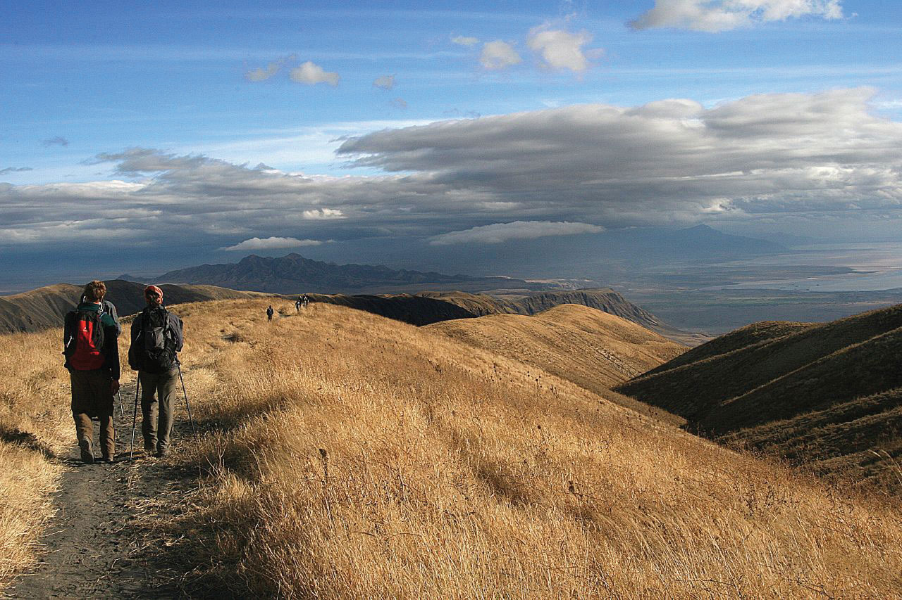Hiking into the Great Rift Valley region in Tanzania.
Source: Photo courtesy of Guillaume Baviere, http://www.flickr.com/photos/84554176@N00/1969101840.
The Great Rift Valley and the surrounding savannas in Kenya and Tanzania are home to some of the largest game reserves in Africa, with a broad variety of big game animals. One of these large regions is the vast Serengeti Plain, located in northern Tanzania and southern Kenya. The governments of Tanzania and Kenya maintain national parks, national game reserves, and wildlife sanctuaries in their countries, most notably in the Serengeti Plain. Legal protection for as much as 80 percent of the Serengeti has been provided. The protections restrict hunting and commercial agriculture and provide protection status for the wildlife. The word Serengeti means “Endless Plains.”
The Serengeti Plain is host to an extraordinary diversity of large mammals and fauna. The largest migration of land animals in the world occurs in the Serengeti. Every fall and spring, as many as two million wildebeests, antelope, and other grazing animals migrate from the northern hills to the southern plains in search of grass and food. The Ngorongoro Conservation Area, which is a UNESCO World Heritage Site, and the Ngorongoro Crater are located on the Tanzanian side of the border. The enormous crater is the basin of an extinct volcano that has been transformed into a protected national park for the animals that graze on the grassy plains. This is a dry region because the Ngorongoro Highlands create a rain shadow for the area.
Figure 7.41 The Serengeti Plains in the Ngorongoro Crater, Tanzania
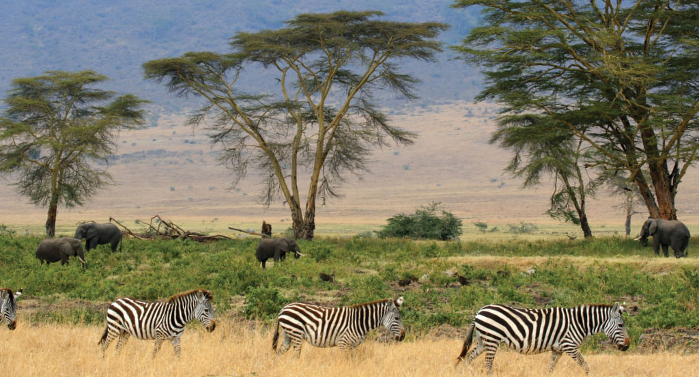Source: Photo courtesy of Gary, http://commons.wikimedia.org/wiki/File:Zebras,_Serengeti_savana_plains,_Tanzania.jpg.
Dozens of other protected areas throughout Eastern Africa have been established in an effort to protect and sustain the valuable ecosystems for the large animals that have found their habitat encroached upon elsewhere by the ever-expanding human population. Kenya has more than fifty-five nationally protected areas that serve as parks, reserves, or sanctuaries for wildlife. The Amboseli National Reserve and Mt. Kenya National Park are two of the more well-known protected areas. The “big five” game animals—elephants, rhinoceroses, lions, leopards, and buffalo—and all the other unique animals found in the same ecosystems, translate into economic income from tourists from around the world that wish to experience this type of environment. The national park systems in Uganda and Ethiopia have made provisions to provide more sanctuaries for wildlife in areas where the human population is growing and the political situation has not always been stable.
Germany gained control of the region of what is now Tanzania in their scramble for African territory in the late 1800s. Germany relinquished the colony to Britain after World War I. Off the coast of East Africa is the island of Zanzibar, which has been an island trading post for centuries and drew in shipping trade from the Middle East, India, and other parts of Africa. The spice trade attracted European ships throughout colonial times. During British occupation, the mainland region was called Tanganyika, named after the large lake on the eastern edge. In 1960, the colony gained independence from Great Britain, and four years later Zanzibar and Tanganyika came together to form the country of Tanzania. Zanzibar remains an important travel destination; major tourism infrastructure has been developed there. The coastal city of Dar es Salaam is the primate city of the country and acts as the capital. In 1996, Dodoma was declared the official capital. Dodoma is a type of forward capital, because the declaration of Dodoma as the official capital was intended to move the political power inland, toward the country’s center. The parliament meets in Dodoma, but major government offices remain in Dar es Salaam, making Dar es Salaam the de facto capital of the country.
Tanzania is an agricultural country; as much as 80 percent of the people make their living off the land. The rural nature of the population signifies that the country is at the lower end of the index of economic development with larger families and lower incomes. An emphasis on tourism is a growing trend in Tanzania. The government has stepped up efforts to expand the tourism sector of the economy. Oil and natural gas exploration has also been emphasized in hopes of raising the level of national wealth.
Figure 7.42 Elephant Tusks in Mombassa, Kenya
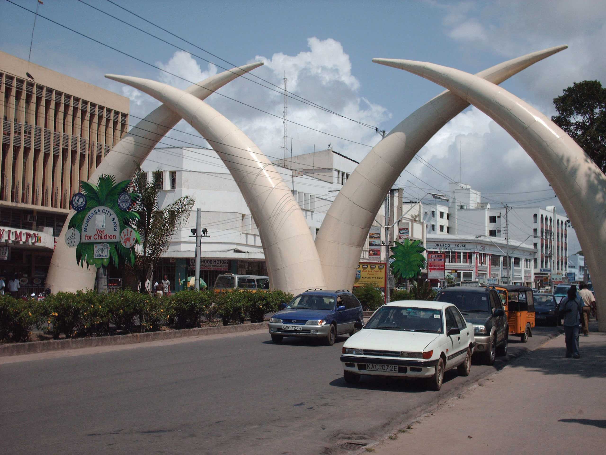Wildlife and game reserves are a large part of the tourism economy in places such as Kenya and Tanzania.
Source: Photo courtesy of Sandro Senn, http://commons.wikimedia.org/wiki/File:Tusks_in_City_of_Mombasa.jpg.
There are more than one hundred ethnic groups in Tanzania. Swahili, an indigenous language, is the lingua franca, and English is used in the higher legal courts and in the universities for higher education. Swahili is used as a second language throughout much of East Africa and serves as a major cultural connection between the many ethnic groups. Tanzania is unique in this aspect; an indigenous language—that is, Swahili—was chosen as the lingua franca rather than the colonial language. Most people learn at least two or three languages, depending on their circumstances. The religious balance of Tanzania’s population of more than forty million people is almost evenly split three ways between Christianity, Islam, and traditional religions.
During colonial times, the British considered the land area now called Kenya to be a Crown protectorate area. The coastal city of Mombassa has been an international shipping port for centuries and is now the busiest port in the region. Persian, Arab, Indian, and even Chinese ships made port in Mombassa during its earliest years to take part in the lucrative trade of slaves, ivory, and spices. Portugal sought early control of the trade center but eventually lost out to Britain. Arab and Middle Eastern shippers brought Islam to the region; Europeans brought Christianity. Hinduism and Sikhism from India found their way into the country with workers brought over by the British to help build a railroad to Uganda. Kenya gained independence in 1963 and has worked throughout the latter part of the twentieth century to establish a stable democratic government.
Nairobi, Kenya’s capital, has become a central core urban area that serves the greater East African region as an economic hub for development and globalization. The largest city in the region, Nairobi is an ever-expanding city that draws in people from rural areas seeking opportunities and advantages. It also has become a destination for international corporations planning to expand business ventures into Africa. Kenya has experienced economic growth and decline as market prices and agricultural production have fluctuated. The Kenyan government has been working with the International Monetary Fund (IMF) and the World Bank to support its economic reform initiatives and reduce waste and corruption in its fiscal processes. The countries of Uganda, Tanzania, and Kenya developed the East African Community (EAC) as a trading bloc to support mutual development and economic partnerships.
Kenya has no one culture that identifies it. There are more than forty different ethnic groups in Kenya, each with its own unique cultural history and traditions. Of the many ethnic groups in Kenya, the Maasai have gained international attention and are often given wide exposure in tourism information. The Maasai are a small minority of Kenya’s population but are known for wearing vivid attire and unique jewelry. Their historical lands have been the border region between Kenya and Tanzania. Cattle, a sign of wealth, have been at the center of Maasai traditions and culture and provide for their subsistence and livelihood. Tourism brings to the surface the diversity of cultures that coexist within Kenya’s environmental attractions, and the country is working to enhance its international draw in the tourism marketplace.
Uganda is a small, landlocked country on the northern shores of Lake Victoria. The Western Rift borders it on the west, forming both high mountains and deep lakes. Lakes Albert, Edward, and George are three of the larger bodies of water. The Nile River flows out of Lake Victoria through Lake Kyoga and Lake Albert on its way north, providing an abundant fresh water supply and a transportation route. The Rwenzori Mountains and the Virunga Mountains shadow the country from the west. Mountain gorillas, an eastern gorilla subspecies, inhabit this region. They are extremely endangered: only about seven hundred mountain gorillas live in Africa. One of the two main populations of gorillas lives in the national parks of the Virunga Mountains in Rwanda, Uganda, and the Congo. The second population is found only in a national park in Uganda. The lowland eastern gorilla population is also threatened; their population continues to decline. Poaching, habitat loss, disease, and warfare have devastated their populations in the past century.
Uganda is a poor country and has experienced serious political and ethnic conflicts in recent decades. In 1971, the brutal dictator Idi Amin sought to rid the country of his opponents and many foreigners. He killed many of Uganda’s own people and destroyed the economy in the process. He was ousted in 1979 and lived in exile in Saudi Arabia until his death. Uganda was in conflict with Sudan in the 1990s, during the bloody civil war in neighboring Rwanda. Uganda sided with the Tutsi groups in the region and has had to deal with ethnic division within its own borders. Uganda has many troops engaged in the conflict along the unstable border region of The Congo.
Figure 7.43 Silverback Male Western Gorilla
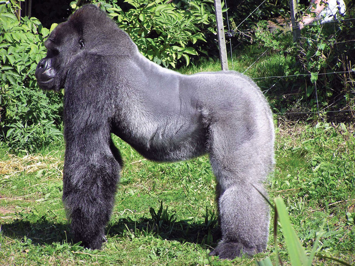It has been reported that a number of eastern mountain gorillas in Virunga National Park were slaughtered and eaten by rebel troops in January of 2007.
Source: Photo courtesy of Adrian Pingstone, http://commons.wikimedia.org/wiki/File:Bristol.zoo.western.lowland.gorilla.arp.jpg.
Uganda is an agrarian state with natural mineral wealth. The potential for added national wealth through mineral extraction exists, but there is no way to fund the extraction operations. Agriculture is the principal employment of Uganda’s labor force, and most workers earn fewer than two dollars per day US equivalent. Coffee has been and continues to be a main export crop. Uganda is about the same size in terms of land area as the US state of Wyoming, but whereas Uganda has an estimated population of more than thirty-two million people, Wyoming has fewer than half a million. Population growth without economic growth places a heavy strain on Uganda’s natural resources.
With more than eighty-five million inhabitants, Ethiopia has the second-largest population in Africa; Nigeria has the largest population. Ethiopia was never colonized by the Europeans in the scramble for Africa, but during World War II, it suffered a brief occupation by Italy (1936–41). From 1930 to 1974, Emperor Haile Selassie ruled the country until he was deposed in a military coup. Many Rastafarians in Jamaica consider Selassie to be the second coming of Christ and a messiah for the African people. According to Rastafarian traditions, Ethiopia was the biblical Zion. After Selassie was deposed, the government shifted to a one-party Communist state. Successive years in Ethiopia were filled with massive uprisings, bloody coups, and devastating droughts, which brought about massive refugee problems and civil unrest. Famine in the 1980s caused the deaths of more than a million people. The Communist element in Ethiopia diminished when the Soviet Union collapsed in 1991. The country’s first multiparty elections were held in 1995.
The region of Eritrea had been a part of a federation with Ethiopia. In 1993, Eritrea declared independence, sparking a boundary war with Ethiopia that eventually concluded in a peace treaty and independence in 2000. The final boundary is still disputed. The breaking off of Eritrea left Ethiopia a landlocked country with no port city.
The capital and largest city in Ethiopia is Addis Ababa, which is the center for various international organizations serving East Africa and Africa in general, such as the African Union and the United Nations (UN) Economic Commission for Africa. This city is the hub of activity for the country and for international aid for the region.
The Great Rift Valley bisects Ethiopia. Highlands dominate the northwest, and minor highlands exist southwest of the rift. The Ethiopian Plateau encompasses the Northwest Highlands and is home to Lake Tana, the source of the Blue Nile. Elevations on the Ethiopian Plateau average more than 5,000 feet, and the highest peak, Ras Dashan, reaches up to 14,928 feet. The climate includes sporadic rain in early spring. The typical rainy season extends from June to September, but the rest of the year is usually dry. The high elevations of the highlands cause a rain shadow effect in the deep valleys or basins on the dry side of the region. Eastern Ethiopia is arid, with desert-like conditions. The impact of overpopulation on the natural environment has been deforestation and higher rates of soil erosion; thus continued loss of animal species is inevitable. Fortunately, Ethiopia has established natural parks and game reserves to protect wildlife and big game.
Ethiopia has been inhabited by divergent kingdoms and civilizations, giving rise to a rich heritage and many cultural traditions—so much so that Ethiopia is home to eight UNESCO World Heritage Sites. More than 60 percent of the population claims Christianity as its belief system; about 30 percent of the population is Muslim. Many traditional religions prevail in rural areas. In contrast to other African countries, Christianity came to Ethiopia directly from the Middle East rather than from European colonizers or missionaries from Western countries. In Ethiopia, Christianity was structured into the Ethiopian Orthodox Church, a church that has endured through centuries. Religious tradition claims that the Ethiopian Orthodox Church is in possession of the lost Ark of the Covenant, which once rested in the holy of holies in the great temple of Solomon in Jerusalem. However, no direct evidence supports this claim. Ethiopia does not use the Gregorian calendar, which is the calendar used in the most of the Western world; rather, Ethiopia uses a calendar based upon the calendar of the Coptic Christian Church, which is about eight years behind the Gregorian calendar because of differences in how the year is calculated and in differences in the dating of the life of Jesus.
Figure 7.44 Old Man in Harer, Ogaden Region of Eastern Ethiopia
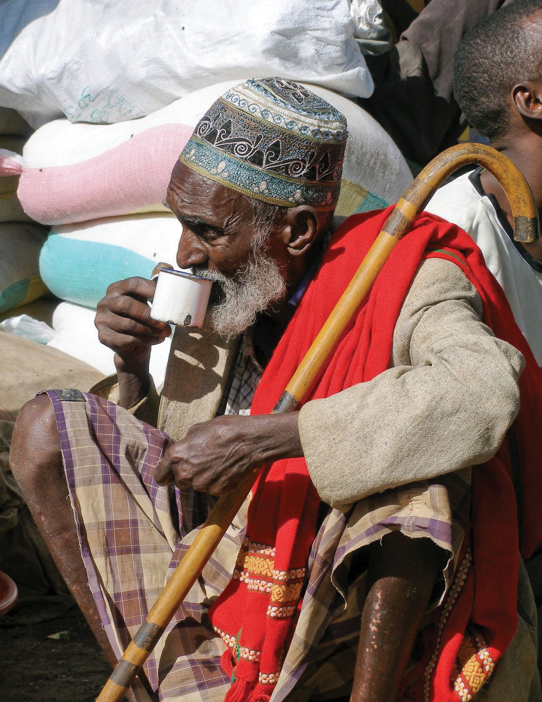Source: Photo courtesy of Gusjer, http://www.flickr.com/photos/gusjer/2436691167.
The large and growing population of Ethiopia is made up of an array of ethnic groups. The three largest ethnic groups are Oromo (35 percent), Amhara (27 percent), and Tigray (6 percent). A number of minority ethnic groups make up the remaining 32 percent. The dominance of the Oromo, Amhara, and Tigray groups provides advantages when it comes to determining which language to use for primary education or in community politics in a region. At least eighty-four separate local languages are spoken in Ethiopia. The lingua franca for higher education and for common use is English. The tradition in many elementary schools is to use Amharic as the primary language for instruction, but this is breaking down as other languages increase in usage because of population increases.
Eritrea was an Italian colony before joining with Ethiopia in a federation in 1952. Since declaring independence in 1993, Eritrea has had a difficult time balancing positive economic growth with its border dispute with Ethiopia. The border war with Ethiopia drained this small, poor country of economic resources and destroyed valuable infrastructure. The agrarian culture and economic activities common in Africa also exist in Eritrea. Farming and raising livestock are the main activities of as much as 80 percent of its citizens. The government has controlled almost every aspect of business and industry within its command economy structure. In 2008, in an attempt to attract business and connect with global markets, the port city of Massawa opened a free-trade zone and has been attracting business connections. Mineral extraction is being explored by multinational corporations, and various foreign governments have been working to establish stronger ties.
Eritrea is located north of the African Transition Zone. Most countries north of the African Transition Zone have an Islamic majority, but that is not necessarily the case in Eritrea. Statistical data are difficult to confirm, but Christianity is believed to be as prominent as Islam in Eritrea. The main Christian denomination is the Eritrean Orthodox Church, with smaller percentages of Roman Catholics and Protestants. Most Muslims are Sunni. The government highly regulates religious activities and requires all churches to register with the state and provide personal information regarding its members. Members of religious groups not registered with the state may be subject to arrest or imprisonment for violation of this requirement. Examples of groups not approved by the government of Eritrea as of 2010 include Baha’is and Jehovah’s Witnesses.
The Bab el-Mandeb Strait, between the Red Sea and the Arabian Sea, separates Africa from Asia on the southwestern tip of the Arabian Peninsula. The strait is a narrow strategic choke point for international shipping tranferring cargo from Europe to Asia through the Red Sea and the Suez Canal. On the African side of the strait is the small former French colony of the Republic of Djibouti. Natural resources within the country are sparse, and the republic depends on its relationship with countries such as the United States or its former colonizer to augment its financial status, keep the region stable, and protect valuable shipping in the nearby waterways. The United States has an important military base in Djibouti, which is the only major US military base in Subsaharan Africa. The French also have a major military base located in Djibouti. The significance of the Djibouti’s location means it is a critical place for monitoring both the war on terrorism and incidences of piracy off the Horn of Africa. A main objective of having European and US military bases in Djibouti is to insure safe passage of oil tankers through the strait providing European countries and the United States with petroleum from the Persian Gulf states.
Like many other African countries transitioning from colonies to independent countries, Djibouti has experienced political infighting that has been detrimental to the country’s economic situation. The government struggles with foreign debt and a lack of economic development opportunities. Most of the population lives in the capital city of Djibouti, where the unemployment rate is extremely high. Its vital location is the country’s main asset, and foreign aid has been a major part of the country’s economic equation.
The country presently called Somalia resisted the forces of European colonizers scrambling for African land in the 1800s. The various kingdoms and their powerful leaders kept the colonial forces out well beyond World War I. Somalia’s close vicinity to the Arabian Peninsula and the prevalence of Arab trade provided a direct connection through which Islam was quickly diffused from Arabia to Africa. Political alliances were fused between the Somalian kingdoms and the Ottoman Empire. The leaders of the Horn of Africa used Islam as a centripetal force in uniting the people against outside forces.
It was not until 1920, as a direct result of the use of airplanes in warfare, that the northern region of Somaliland buckled under to the British colonial forces. The eastern and southern regions were soon dominated by Italy. Britain finally withdrew from British Somaliland in 1960. The country then joined with the Italian portions of the region to form a new nation, Somalia. An authoritarian socialist regime established power in 1969 and lasted until 1991. The socialist regime in Somalia initiated a territorial war in 1978 in an attempt to gain back territory in the eastern parts of Ethiopia’s Ogaden region, which was once part of the various Somalian kingdoms. The war only intensified the divisions in the region. After 1991, the country descended into political chaos, economic turmoil, and factional fighting.
Northern clans who opposed the central government broke away in a move toward independence, and the old British Somaliland became the Republic of Somaliland in 1991. Somaliland operates independently from the rest of Somalia and prints its own currency. The northeast region of the country referred to as Puntland also broke away from the central government. Somaliland sought total independence, while Puntland was in favor of belonging to a national union but wanted to maintain autonomy. Both autonomous regions have their own governments and are relatively stable, but they have had conflicts regarding the territory between them. Neither is recognized by outside entities as independent countries. Puntland’s port of Bosaso has developed into a rapidly growing economic city and has expanded from fifty thousand to five hundred thousand people since 2000. Plans are in the works for a new airport and an economic free-trade zone, which should attract additional business and an influx of additional immigrants from other parts of Somalia and the region.
Southern Somalia has been broken down into regions ruled by warlords who have pillaged the country and control vital transportation links. A total government breakdown occurred in 1991, leading to a meltdown in all areas of society. Food distribution was hampered through pillaging and a lack of fuel and structured transportation. Electrical power was lost and clan warfare became the rule of law. A famine subsequently caused an estimated three hundred thousand deaths. The UN stepped in with food and peacekeeping troops, and in 1992, the United States dispatched marines in Operation Restore HopeThe 1992 mission conducted by US marines to stabilize the distribution of food aid from the port of Mogadishu to Somalia and Ethiopia., which stabilized the distribution of food but was unsuccessful in stabilizing the political situation and establishing a legitimate government. In 1993, nineteen US soldiers were killed in a battle in the capital, Mogadishu, after of which the US withdrew its troops. The UN withdrew its peacekeeping troops in 1995.
Figure 7.45 Somalia, with Its Autonomous Regions of Somaliland and Puntland
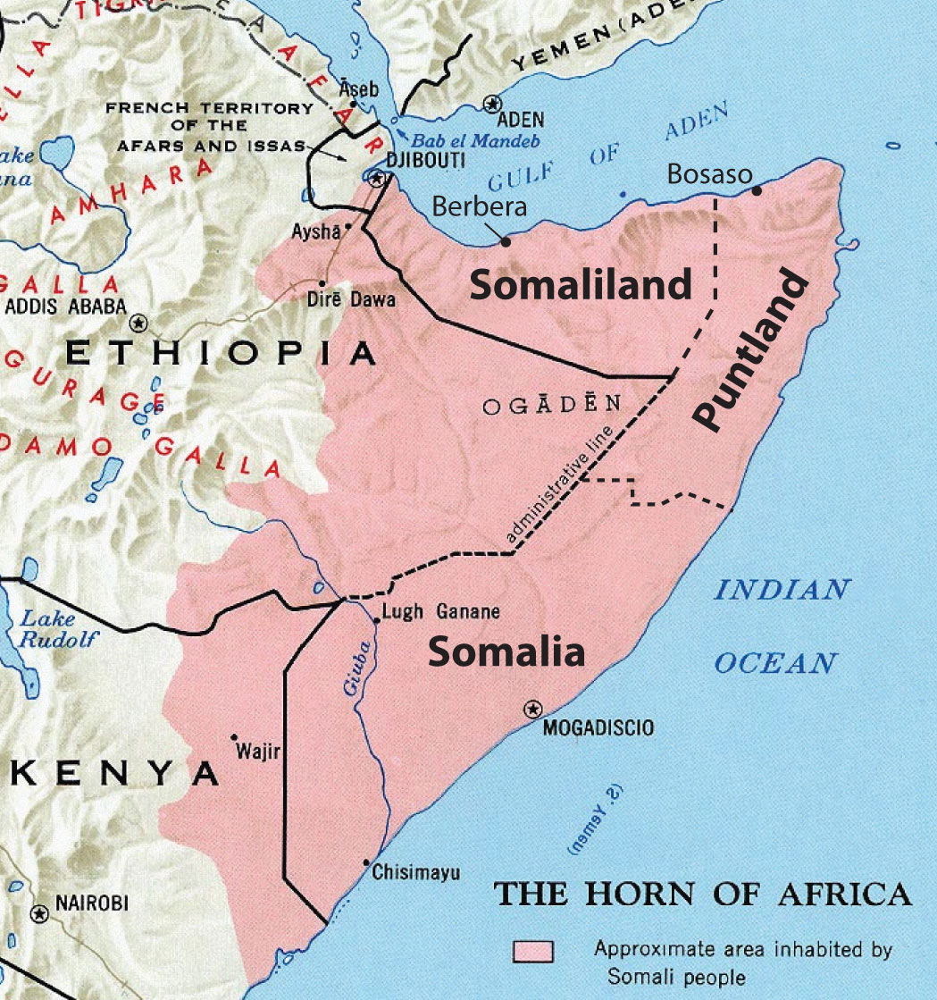Source: Map courtesy of the CIA, http://en.wikipedia.org/wiki/File:Somali_map.jpg.
Figure 7.46 Super 64 Military Helicopter Piloted by Michael Durant over Mogadishu, 1993
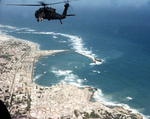This helicopter crashed and was the basis of the Hollywood movie Blackhawk Down, depicting warfare in Somalia.
Source: Photo courtesy of the US Army, http://commons.wikimedia.org/wiki/File:Black_Hawk_Down_Super64_over_Mogadishu_coast.jpg.
Despite a lack of effective national governance, the informal economy in Somalia continues to thrive. Trading through personal transactions and the private marketplace continues to provide for the needs of the people. The main sources of revenue are agricultural goods and livestock, as well as money sent by people from outside the country to their families in Somalia. Banking and businesses have struggled to adapt to the continual conflicts, yet various hotels and service agencies continue to operate under the protection of private security militias. Telecommunication firms continue to offer service with low calling rates for urban areas. The educational system is heavily supported by the private sector because of the collapse of the central government. Secondary education at the university level is struggling in the south but is more established in Puntland and Somaliland, where they are funded by central authorities. Income from piracy on the high seas has brought in millions to the private warlords that manage the operations. Stabilizing the country and showing economic progress will remain a difficult task for whoever leads Somalia.
The average family size in East Africa is about 5.5, which is typical of the entire continent of Africa and translates into exploding population growth. In many areas of Africa in general and East Africa in particular, most of the population (as much as 80 percent) makes its living off the land in agricultural pursuits. Large families in rural areas create the conditions for the highest levels of rural-to-urban shift of any continent in the world. The large cities—with expanding business operations complete with communication and transportations systems that link up with global activities—are an attractive draw for people seeking greater employment opportunities. In East Africa, each of the three largest cities—Nairobi, Dar es Salaam, and Addis Ababa—is more populous than Chicago, the third-largest US city. In West Africa, the city of Lagos, Nigeria, is more populous than New York City and Chicago combined. These cities are all riding the worldwide wave of globalization and are core centers of economic activity for the business sector and corporate enterprises.
Figure 7.47 Urban Slums of Nairobi
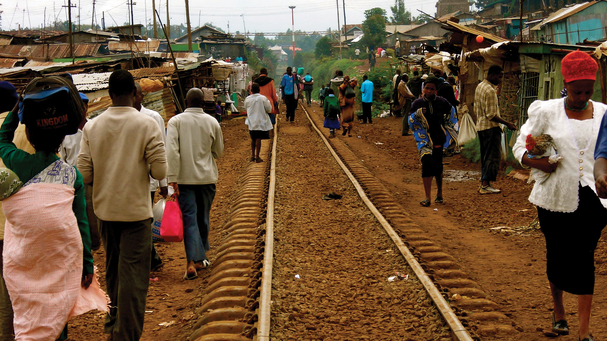People walking to and from work along the railroad tracks in a poor neighborhood in Nairobi, Kenya.
Source: Photo courtesy of ND Strupler, http://www.flickr.com/photos/strupler/2975363718.
The other regions of Africa all have central cities that act as economic core areas and attract the multitudes from rural areas looking for employment and opportunities. International connections are indicative of local economic development, which is causing the urban areas to grow at exponential rates. Cities heavily affected by a high level of rural-to-urban shift often cannot build infrastructure fast enough to keep up with demand. Self-constructed slums and squatter settlements, which lack basic public services such as electricity, sewage disposal, running water, or transportation systems, circle the cities. All the large cities of Africa are expanding at unsustainable rates. Traffic congestion, trash buildup, higher crime rates, health problems, and air pollution are some of the common results.
As of 2010, the US population was about 80 percent urban. This is the opposite of places such as East Africa, where about 80 percent of the population remains rural. In the next few decades, Africa could witness the growth of megacities that might continue to expand and grow for another century. For example, if the current rates continue, Ethiopia’s population of eighty-five million people in 2010 will double to more than 160 million by 2040. Urban areas will continue to be target destinations for employment opportunities, whether they exist or not, and rural-to-urban shift will drive the populations of cities such as Addis Ababa to double, triple, or quadruple in size by 2020.
Figure 7.48 Modern City of Nairobi
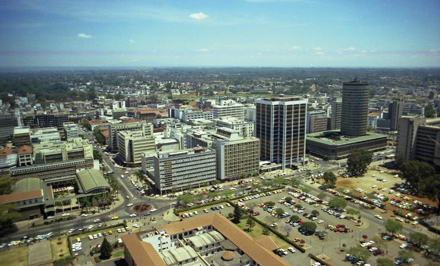Since this photo was taken in 1980, the city center of Nairobi has expanded and grown ever larger to become a major core business hub for East Africa. The central business district at the center of this core locale has an enormous pull factor for individuals from rural areas seeking employment.
Source: Photo courtesy of Brian Snelson, http://www.flickr.com/photos/exfordy/2214392840.
Identify the following key places on a map: